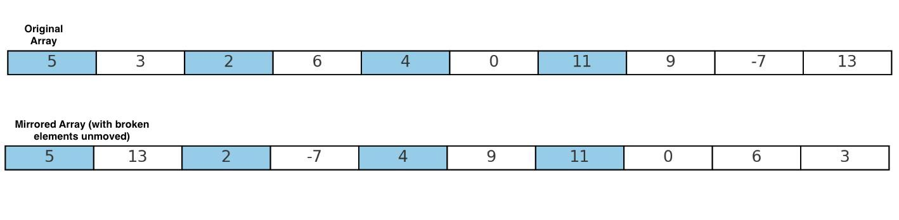

Consider a one-dimensional integer vector representing an image. This image is reflected in a peculiar mirror, where some parts of the mirror are frozen. When the image is mirrored, the elements of the array should be reversed. However, the elements at positions corresponding to the frozen parts retain their original places and are not reversed.
To achieve this mirrored effect, you need to reverse the array while keeping the elements at the frozen indices unchanged. The frozen indices are provided separately as an input.
Input:
Output:
In this example, the elements at indices 0, 2, 4, and 6 remain in their original positions while the other elements are reversed to produce the mirrored image vector.
Below is a visual representation of the input and output transformation:
In the visual, the frozen elements (in blue) retain their positions while the rest of the elements are reversed.
std::vector<int> mirrorImage(const std::vector<int> const& image, const std::vector<int> const& frozenIndices);